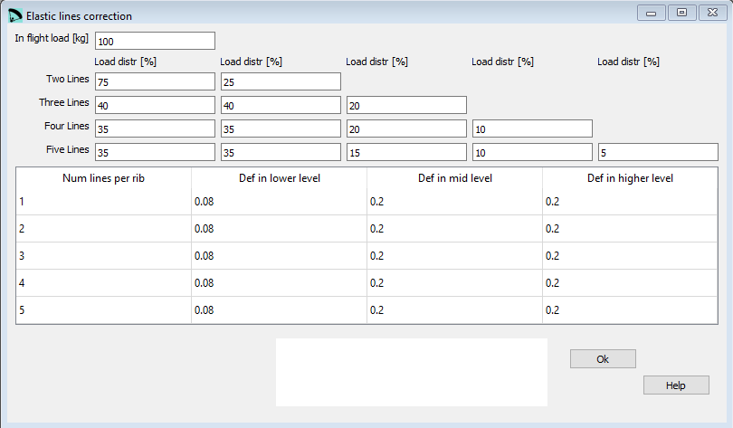

Elastic lines correction¶
Option to estimate the elastic elongation of the lines in normal flight configuration. These elongations are subtracted from strictly geometric length, so that in flight, are the exact lengths of project.
To calculate the elongation, we take into account the loads on each line, and the rigidly coefficient of each line, the elongation estimated by Hook’s law: F = k·dx
{kind=link}
Raw data:
*****************************************************
* 18. Elastic lines corrections
*****************************************************
100
75 25
40 40 20
35 35 20 10
35 35 15 10 5
1 0.08 0.2 0.2
2 0.08 0.2 0.2
3 0.08 0.2 0.2
4 0.08 0.2 0.2
5 0.08 0.2 0.2
In flight load¶
The total in flight load in [kg] without the wing itself.
Load distribution¶
Here you define the load distribution across the individual anchors based on the number of anchors used per rib.
Line deformation¶
Depending of the number of anchors and the line level you setup here the rigidly coefficient of the lines.
A more detailed description you can find here Laboratori d'envol website.